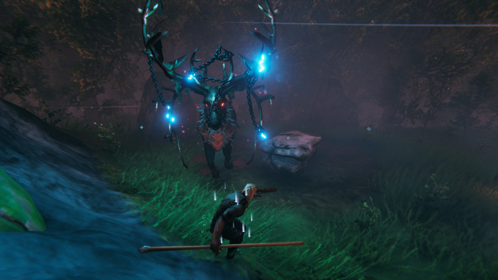
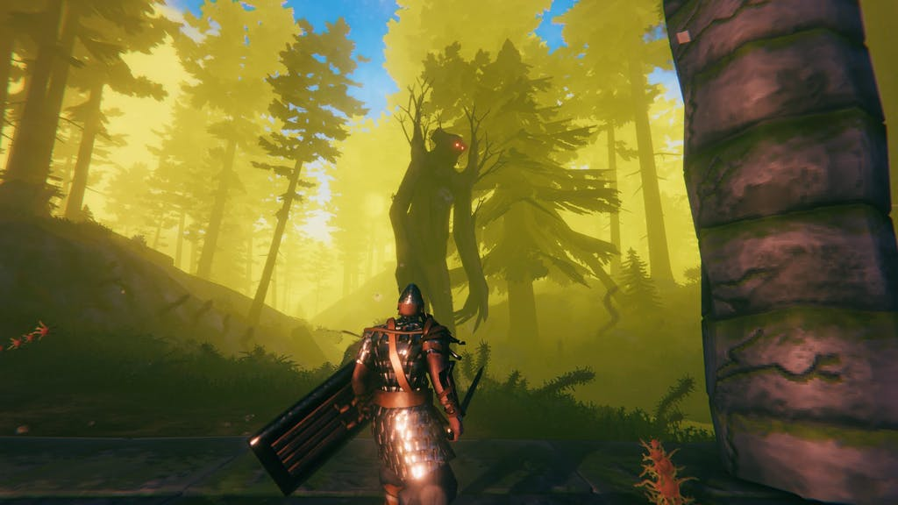
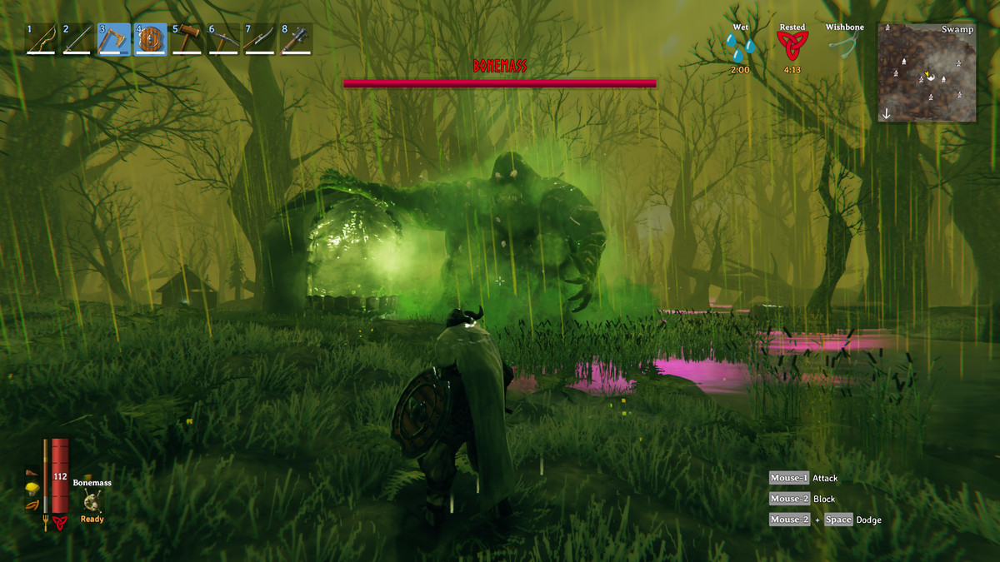
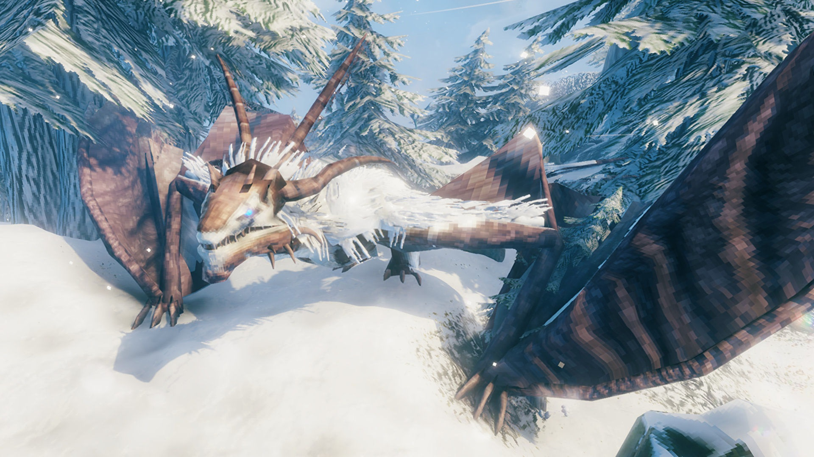
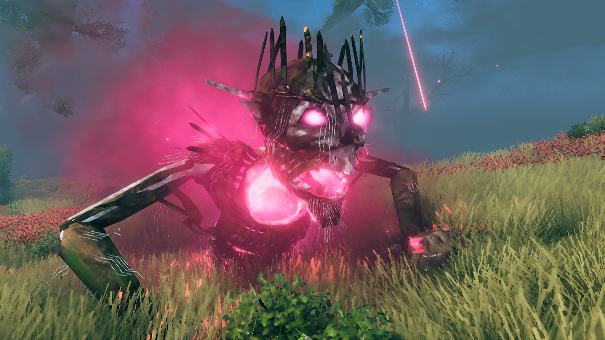

Valheim Bosses
In each biome, except for the ocean, you can find a new boss to challenge. Each biome's boss drops an item necessary to progressing in the next biome. To summon them, you must find their alter and offer them the appropriate sacrifice.
Eikthyr
Eikthyr is the first boss you face, found in the meadows biome. At his alter you will have to sacrifice three deer trophies, which are random drops from killing deer. Once summoned, Eikthyr will attack with area of effect lightning attacks as well as a melee antler charge. Once killed, he drops hard antlers. Hard antlers are used to craft the first pickaxe so you can begin mining metal in the black forest.
The Elder
The Elder is the second boss, and it can be found in the black forest. It is summoned using three ancient seeds, which are randomly dropped by high level greydwarves when slain. The Elder will attack by shooting ranged vines, summoning vines at your feet, and a close-range stomp. Once he is defeated, he drops the swamp key. The swamp key is used to unlock krypts in the swamp, which have raw iron and a map to the next boss.
Bonemass
Bonemass is the third boss, found in the swamp. It is summoned by sacrificing ten withered bones, which are found in krypts. Bonemass will attack by swatting with his fist, throwing globs of goo, and releasing a cloud of poisonous gas. Once defeated, it drops a wishbone, which is used to find silver in the mountains biome.
Moder
Moder is the fifth boss in the game. The drake can be summoned in the mountains biome by sacrificing three dragon eggs, found in dragon nests in the same biome. Once summoned, Moder will attack by firing ice projectiles, a swipe attack with its claws, and using ice breath. This boss drops dragon tears, which are used to craft an artisan table and make various upgrades to your refineries.
Yagluth
Yagluth is the sixth and currently final boss in the game. It can be found in the plains biome, and summoned using five fuling totems. When summoned, Yagluth attacks with a fist slam that explodes, a fist slam that summons meteors, and by breathing fire. Once defeated, it drops the Yagluth trophy and "Yagluth thing", a placeholder item until the next biome in progression is updated.